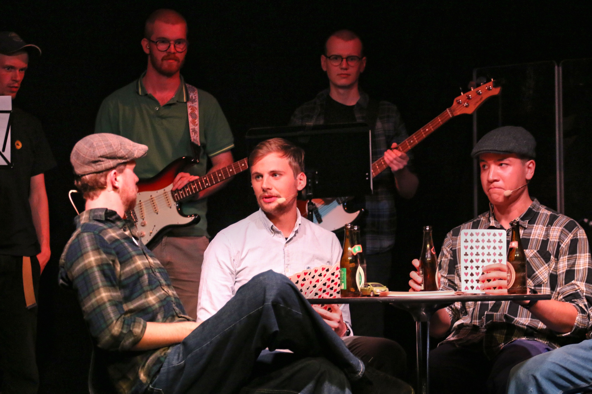

Band
Spil live musik til forestillingen og vær med til at skabe stemningen
NAT Revyen er en studenterdrevet forening på SDU, hvor omkring 30 engagerede studerende hvert år skaber en revy fyldt med sketches, sange og scenografi. Vi arbejder sammen på tværs af studieretninger og opfører forestillingen i Studenterhuset Odense den første weekend i oktober



Uanset om du vil stå på scenen eller arbejde bag kulissen, er der plads til dig i NAT Revyen
Spil live musik til forestillingen og vær med til at skabe stemningen
Stå på scenen, spil karakterer og formidl sketches med energi
Hjælp med iscenesættelse, timing og at samle numrene til en helhed
Skriv satire, punchlines og idéer, som bliver til revynumre
Hold styr på rekvisitter, skift og afvikling bag scenen
Design visuelle udtryk, kulisser og kostumer, der løfter forestillingen
Der er mange måder at bidrage på - find din plads i holdet
Bliv medlem